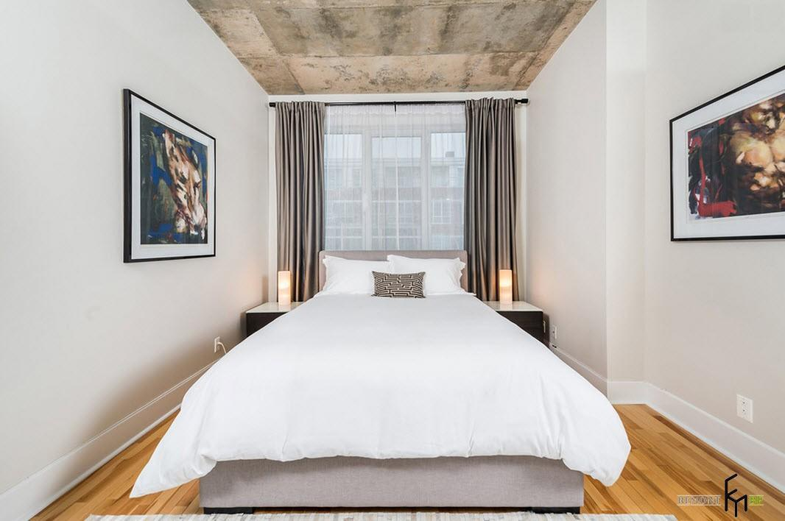
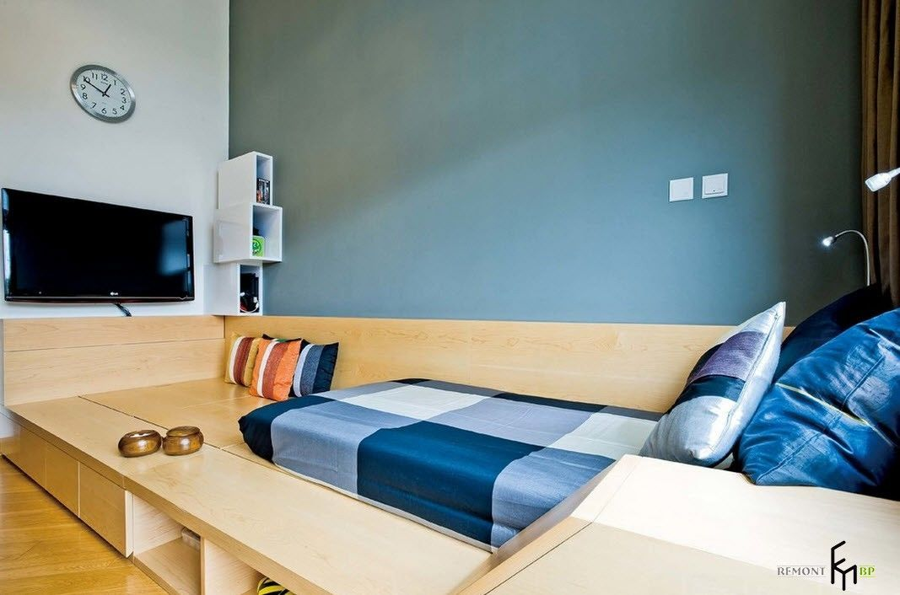
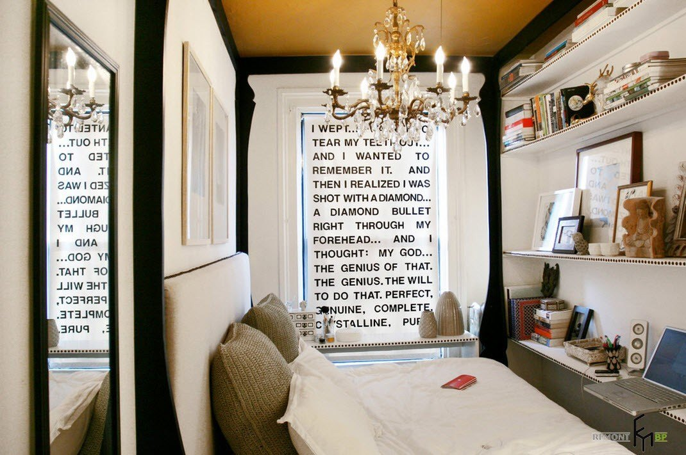
Но выход есть всегда. Мы постарались собрать для всех владельцев
скромных жилых площадей вдохновляющие примеры дизайнов спален,
имеющих очень скромные размеры. Варианты интерьеров в различных
стилистических направлениях, цветовых палитрах, функциональной
наполненности и совмещения с другими жилыми сегментами.
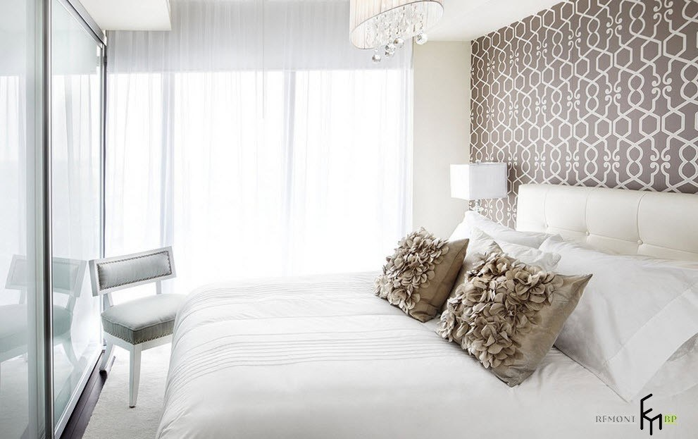
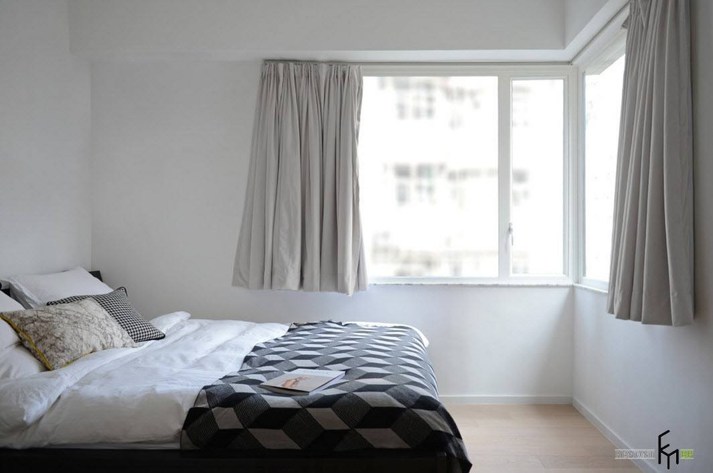
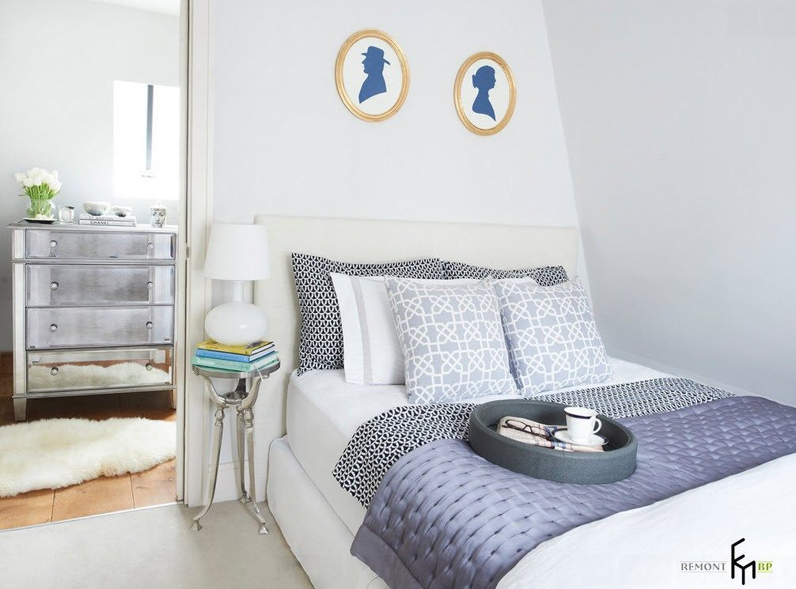
Современные технологии приходят на помощь желающим сэкономить
пространство – телевизор можно повесить на стену, он будет
занимать места не больше, чем картина, можно прикрепить
к самому потолку с помощью кронштейна.
Для организации кабинета в спальне – достаточно установить
небольшую консоль с компактным креслом или стулом и поставить ноутбук.
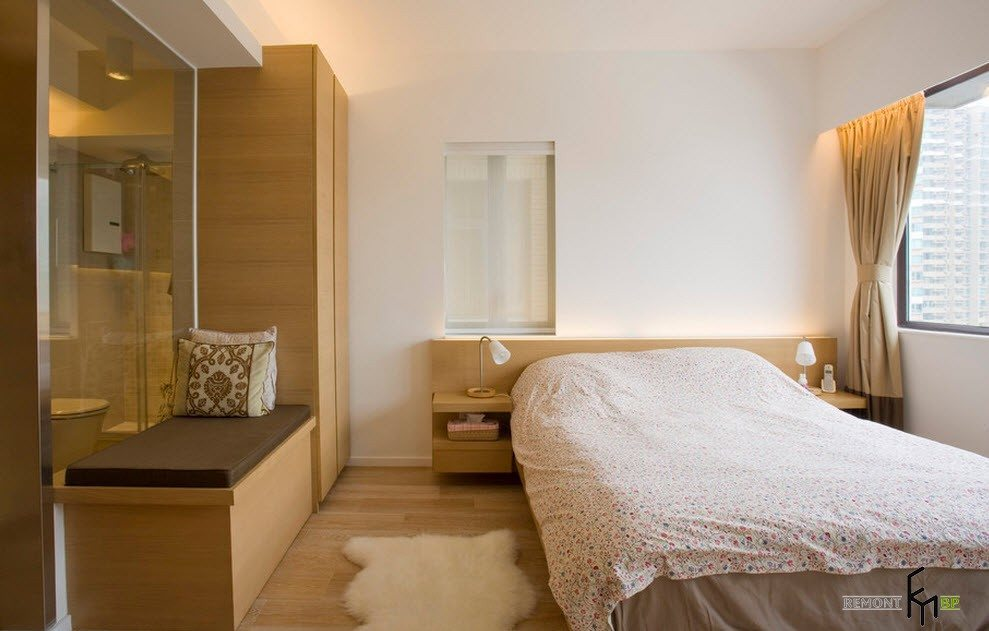
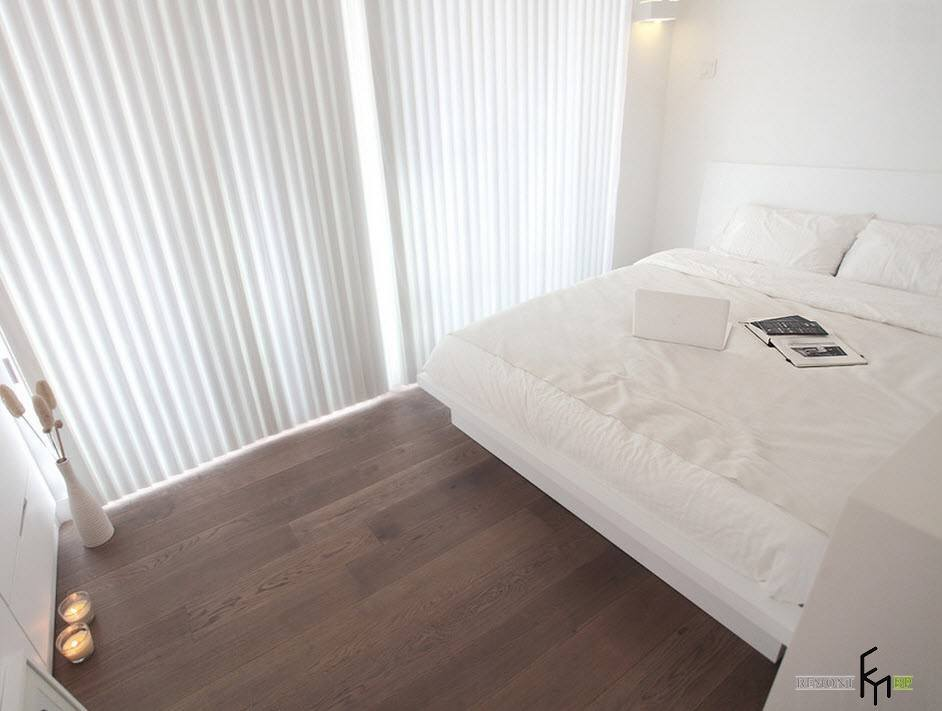
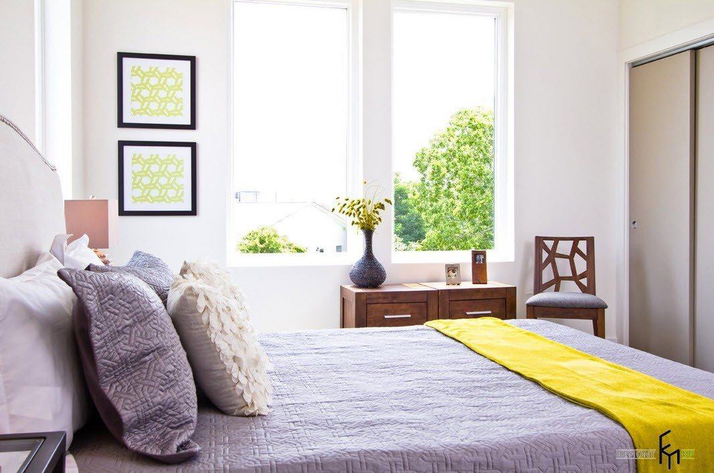
Чем меньше комната – тем светлее отделка!
Все мы прекрасно понимаем, что небольшие пространства
нуждаются в визуальном расширении при помощи отделки
в светлых и даже белоснежных тонах. Но чтобы избежать
внешнего вида спальни, схожего со стерильной белой палатой,
необходимо использовать хотя бы пару-тройку акцентов,
выполненных в контрастных или более ярких тонах.
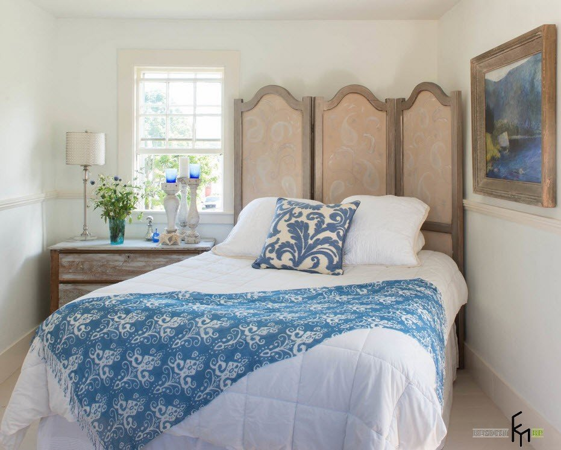
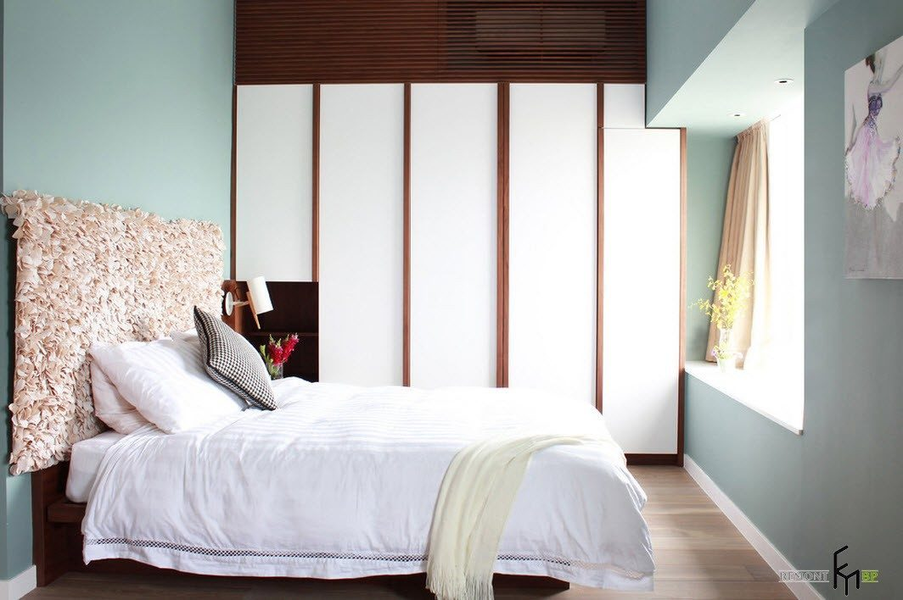
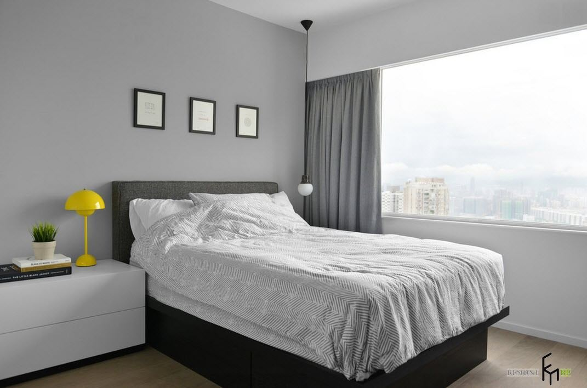
Акцентными пятнами на фоне светлой цветовой гаммы
практически всех поверхностей комнаты могут быть
элементы декора, текстиль или некоторые предметы мебели.
Отличным от всей отделки помещения может стать
напольное покрытие теплых, древесных оттенков.
С помощью ярких, контрастных элементов можно создать
действительно интересный и нетривиальный дизайн спальни,
даже на абсолютно белом фоне стен.
Когда помещение настолько мало, что едва вмещает спальную
кровать на двоих, акцентным элементом может выступать
изголовье кровати, которое не только разбавит светлую
отделку, но и придаст спальне индивидуальности,
учитывая необычный дизайн.
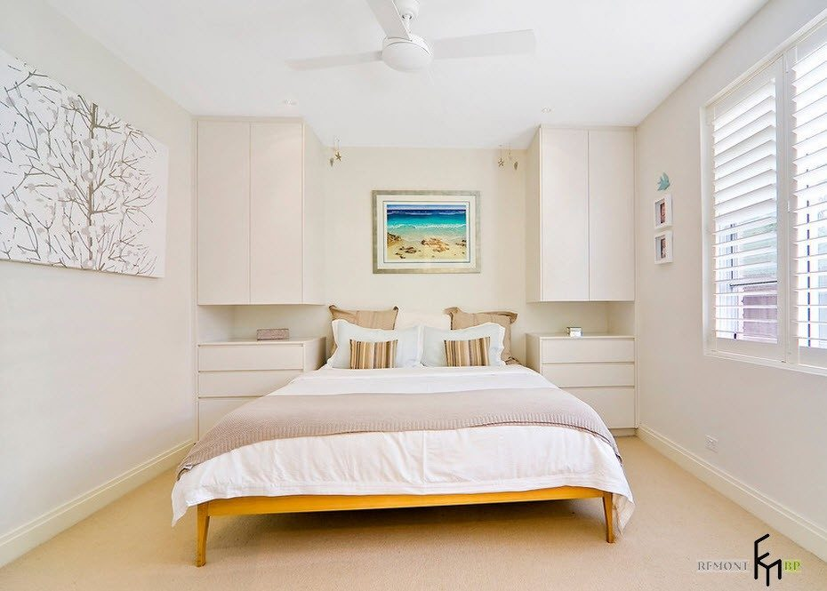
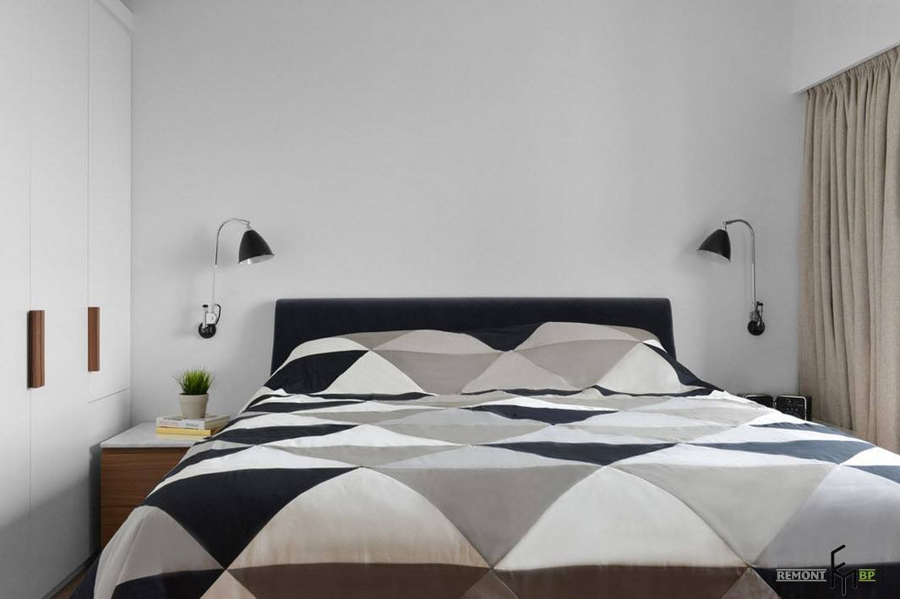
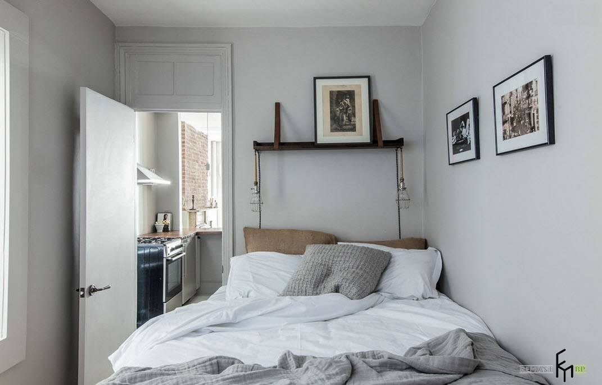